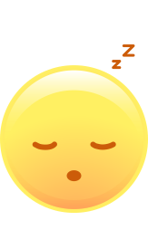
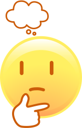

Sharing Brain Activity Study
Next: Instructions
Instructions
Start Study
Edit Brain Activity Snapshots
Finished Editing
Question 1: What is your favorite color?
Start Replay
Pause Replay
Replay Backwards
Restart Replay
Delta waves are associated with deep sleep. This is represented by the green line.
Alpha waves are associated with relaxation and disengagement. This is represented by the blue line.
Beta waves are associated with focused concentration and active thinking. This is represented by the yellow line.
Recording starts/stops here ▼

